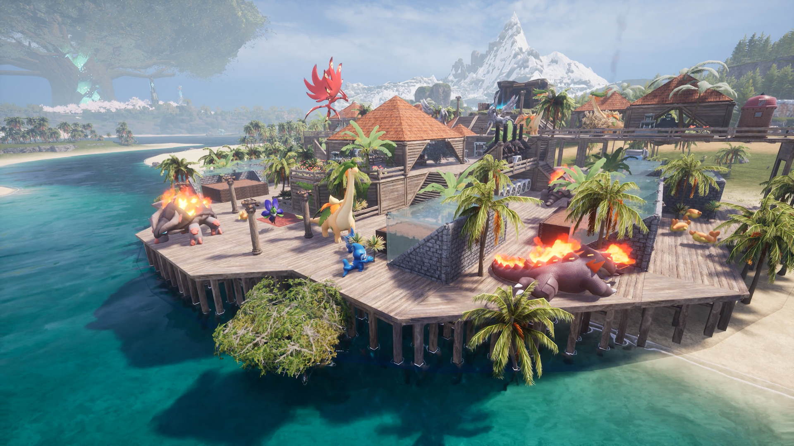
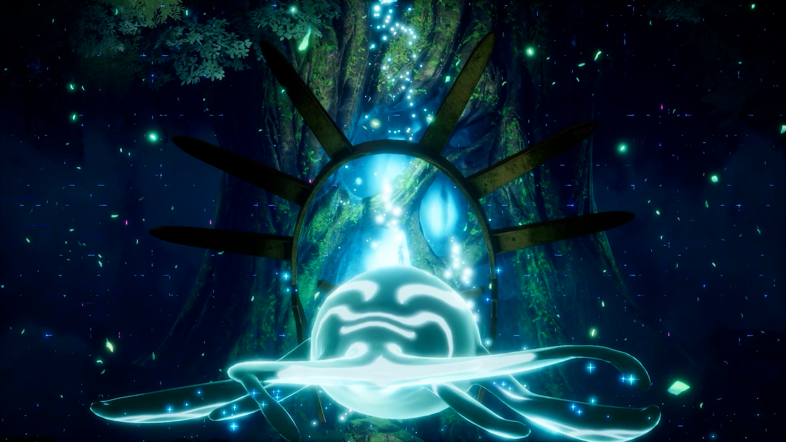
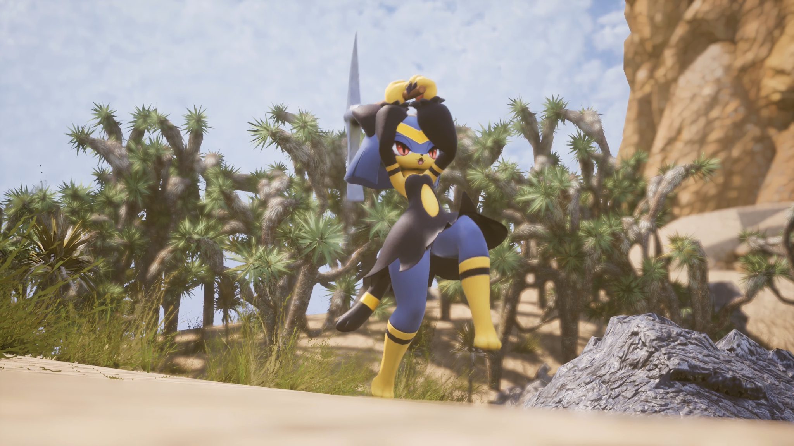

팰월드 1.0 국룰 거점 위치 6곳 총정리, 광석 유황 복합 거점부터 화산 자리까지
팰월드 1.0 찍고 나서 다시 거점 잡으려고 좌표부터 검색해보신 분들 많으시죠. 저도 그랬는데요, 검색해보니 앞서 해보기 시절 국룰 자리랑 똑같은 얘기만 계속 나와서 이게 지금도 맞는 건가 싶더라고요.
실제로 스팀 공식 체인지로그를 보면 오버월드 전역의 광석 분포를 늘려서 거점 후보지 선택지가 넓어졌다고 밝히고 있고요, 국내 매체(게임플)가 1.0 이후 실측한 기사를 봐도 예전에 다들 알던 '쇠락한 교회 뒤편' 말고 다른 선택지가 새로 생겼네요. 맵 자체도 신규 지역이 대거 늘면서 훨씬 넓어졌는데, 기존 세이브의 좌표는 그대로 유지되고 경계만 넓어진 거라니 그 부분은 안심하셔도 됩니다.
- 하늘섬 천양향 — 전용 광물 솔라이트
- 세계수 — 전용 광물 팰키사이트
- 신규 소형 섬 7개 · 신규 정착촌 4곳 · 해상 건축 추가
천양향이랑 세계수 얘기는 바로 다음에 조금 더 짚어볼게요. 신규 소형 섬이랑 정착촌, 해상 건축까지는 오늘 다룰 국룰 거점 얘기랑은 결이 좀 달라서 이번 글에서는 스쳐만 갈게요.
시스템 얘기는 여기까지만 짚고, 오늘은 딱 '어디에 거점을 지어야 하나'만 팔게요.

1.0 되고 나서 거점 자리 다시 고민되시는 분들, 저만 그런 거 아니었네요.
이미지: Steam 공식 1.0 체인지로그
팰월드 1.0에서 거점 자리는 뭐가 달라졌나
천양향은 하늘에 붕 뜬 섬 지역인데 팔디움 힘으로 떠 있는 구조라 전용 광물인 솔라이트가 여기서만 나오고요, 세계수는 스토리 최종 지역답게 팰키사이트라는 전용 광물을 따로 갖고 있어요. 둘 다 거점 자리 후보라기보단 신규 광물 파밍처에 가까워서, 오늘 다룰 국룰 거점 얘기는 기존 대륙 쪽으로 한정할게요.

세계수 쪽은 스토리 마지막 지역이라 그런지 분위기부터 다르답니다.
이미지: Steam 공식 1.0 체인지로그
| 구분 | 앞서 해보기 | 1.0 |
|---|---|---|
| 광석 분포 | 특정 자리에 몰림 | 오버월드 전역 확대, 거점 후보 늘어남 |
| 작업 적성 상한 | 4~5레벨쯤 체감 최상급 | 최대 10레벨로 확장, 전 팰 재조정 |
| 맵 범위 | 팰파고스 섬 위주 | 천양향·세계수·신규섬 7개 포함 확장(기존 좌표 유지) |
이 표만 봐도 알 수 있듯, 예전 좌표를 그대로 믿고 짓기보단 한 번쯤 다시 확인해볼 만하다는 게 이 글의 출발점이에요.
광석이랑 유황을 한 자리에서 캘 수 있는 복합 거점 2곳
본격적으로 좌표부터 볼게요. 이 글에서 제일 힘줘서 보고 싶은 건 금속 광석이랑 유황을 거점 두 개로 나누지 않고 한 반경 안에서 같이 캘 수 있는 자리예요. 채굴 거점 하나로 두 자원을 동시에 해결하면 그만큼 다른 거점을 다른 용도로 굴릴 여유가 생기거든요.
| 좌표 | 금속 광석 | 유황 | 지형·특징 |
|---|---|---|---|
| (-340, -200) | 10 | 2 | 넓은 지형(다만 평탄화는 쉽지 않아요), 거점 두 개 붙여 대규모 생산구역 가능(돌도 2 나옴). 광맥을 전부 이 거점 하나에 몰아넣긴 어려워서 살짝 나눠 잡아야 해요. 바로 옆엔 기술의 나무. |
| (-255, -465) | 8~9 | 3 | 윈드디어 폭포 옆. 그린모스 다수 등장(고급 팰 기름 동시 파밍) |
그래서 나라면 (-340,-200)부터 잡을 것 같아요. 넓어서 거점 두 개를 이어 짓기 좋으니까요.
참고로 기술의 나무랑 기술의 열매 나무는 서로 다른 시설이에요. (-340,-200) 옆엔 기술의 나무가 있고, 뒤에 나올 (30,-50) 옆엔 기술의 열매 나무가 있다는 점만 헷갈리지 않으시면 됩니다. 둘 다 있으면 좋지만 시설 성격이 다르니, 지금 당장 뭐가 더 필요한지 먼저 따져보고 자리를 고르시는 게 좋아요.
이 두 좌표는 1.0 이후 실측 기준이라, 지형이나 거점 방향에 따라 1~2개쯤 차이 날 수 있어요.
복합은 아니지만 알아둘 만한 국룰 자리 4곳
복합 거점 두 곳 말고도 예전부터 자주 언급되던 국룰 자리가 몇 군데 더 있어요. 다만 이 중 한 곳은 유황이랑 짝을 이루는 게 금속 광석이 아니라 순수한 석영이라, 광석 노리고 가면 살짝 헛걸음할 수 있어요.
| 좌표 | 주력 자원(개수) | 이 자리의 장점 |
|---|---|---|
| (-170, -215) | 금속 광석 8 + 석탄 8 | 광맥 뒤편이라 뒤에 가축 목장·보관함 공간 남아 채굴+목장 겸용 |
| (290, -100) | 유황 8 + 순수한 석영 8 | "광석"이 아니라 순수한 석영이에요 |
| (30, -50) | 순수한 석영 9 + 금속 광석 7 | 지형이 평탄하지 않아 배치에 따라 개수 변동, 바로 옆 기술의 열매 나무 |
| (-210, -315) | 순수한 석영 6 + 금속 광석 4 | 분지 + 바로 옆 강 + 주변 나무라 채굴 효율보다 '생활 거점'으로 좋음 |
(290,-100) 얘기는 좀 더 짚고 갈게요. 여기서 나오는 건 금속 광석이 아니라 순수한 석영이라, 광석 노리고 가면 헛걸음이에요. 유황이야 맞지만 짝이 석영이라는 거죠. 앞서 소개해드린 진짜 광석+유황 복합 자리랑은 다른 자리니 헷갈리지 않으셨으면 해요.
저도 직접 가서 자리를 둘러봤는데, (-210,-315) 쪽은 진짜 강이랑 나무가 바로 붙어 있어서 눈으로 보기에도 살기 좋아 보이더라고요. 물소리까지 들리니까 여기다 거점 잡으면 오래 눌러앉고 싶어지겠다 싶었어요. 채굴 위주로 밀고 싶으면 (-170,-215)가 낫고, 그냥 자리 잡고 오래 살 생각이면 (-210,-315) 쪽이 더 끌립니다.
유황만 몰아서 캘 거면 — 화산 지대와 온도
여기까지가 국룰로 꼽히는 6곳이고, 유황만 확실하게 몰아 캐고 싶으시면 화산 자리는 따로 봐야 해요. 대표적인 곳이 흑요의 화산 일대예요. 유황을 많이 쓰는 조합·탄약 라인을 따로 굴릴 계획이면, 아예 화산 근처에 전용 거점을 하나 더 두는 것도 방법이에요.
| 좌표 | 유황 | 온도 주의 |
|---|---|---|
| (-597, -518) | 8 | 필요 |
| 흑요의 화산 일대(그 외 좌표군) | 다수 분포 | 필요 |
1.0 이후 실측으로 (-597,-518) 자리에서 유황 8개가 다시 확인됐고요, 화산권의 나머지 좌표들은 앞서 해보기 시절 자료라 '화산=유황'이라는 방향 정도로만 참고하시고 좌표 하나하나를 1.0 확정값처럼 믿진 않으시는 게 좋아요. 화산 근처는 당연히 뜨거우니 내열 장비를 챙겨야 하는데, 정확히 몇 등급짜리 방어구가 있어야 버티는지는 아직 확실히 나온 게 없어요.
화산 자리는 자원보다 온도부터 챙겨야 마음 편해요.
자리를 잡았으면 뭘 올려놓나 — 채굴 적성 팰
1.0에서 작업 적성 상한이 10레벨까지 늘고 팰 수치가 통째로 재조정된 얘기는 앞선 글에서 이미 자세히 풀어드렸으니 여기선 채굴 얘기만 짧게 짚을게요. 등급을 올릴 때마다 적성이 하나씩 오르고, 최고 등급에 도달하면 전체 적성이 한 번에 상향되는 구조라 지금 당장 상한(10레벨)에 딱 맞는 팰이 없어도 걱정할 필요는 없습니다. 현재 확인되는 채굴 최고 레벨 팰이 8레벨대라, 나머지는 결국 랭크업으로 메우는 구조거든요.

사막에서 창을 든 이 팰도 1.0에서 새로 합류한 얼굴이에요.
이미지: Steam 공식 1.0 체인지로그
| 채굴 Lv대 | 대표 팰 | 언제 쓰나 |
|---|---|---|
| Lv1대 | 까부냥 | 초반 거점, 만능형이라 이거 하나로도 굴러감 |
| Lv6대 | 아누비스 | 중후반 채굴 전용 거점 |
| Lv7대 | 마그마카이저 · 마그마드라고 · 테라나이트 | 후반 채굴 종결급 |
| Lv8대(1.0 신규) | 셸가드라 | 현재 확인되는 채굴 최고 적성, 최종 종결 후보 |
1.0에서 새로 뜬 팰이라 이름이 아직 낯설 텐데요, 그만큼 채굴 종결 라인업이 새로 짜인 셈이에요.
팰월드 거점 지을 때 체크할 것
| 체크 항목 | 왜 중요한가 | 확인 방법 |
|---|---|---|
| 평지 여부 | 비평탄이면 노드 개수 손해 | 배치 전 지형 미리 둘러보기 |
| 물·나무 인접 | 관개·벌목 겸용이 편해짐 | 좌표 주변 지형 직접 확인 |
| 근처 팟스탯 | 요리·버프 시설 배치 여유 | 거점 반경 안에 배치 시뮬 |
| 온도 | 내열 필요 지역인지 | 화산·설원권이면 방어구 챙기기 |
| 목장·보관함 공간 | 겸용 거점으로 키울 여력 | 배치 전 남는 공간 가늠 |
거점을 옮기고 싶으면 새로 짓고 싶은 자리에 팰박스를 다시 설치하는 방식이에요. 팰박스를 들어서 옮기는 기능은 따로 없고, 기존 팰박스를 해체하면 일하던 팰들은 팰박스로 자동 회수되고 거점 전용 시설은 자동 철거되면서 재료도 환급돼요.
거점 개수 상한은 공식 수치가 아직 없지만, 1.0 실측 기준으로는 월드 설정을 따로 안 건드렸다면 팰 상자 레벨 20 무렵 최대 거점 수가 3개였다는 얘기가 있어요. 이전할 때 쿨타임이나 거점 반경까지는 1.0 기준으로 아직 공식적으로 못 박힌 게 없고요.
팰월드 1.0 거점 자리 정리
한 군데만 정하신다면 (-340,-200)부터 가보시고, 유황까지 넉넉히 챙기고 싶으면 (-255,-465) 쪽도 같이 봐두시면 좋아요. 순수 채굴 효율보다 오래 살 자리를 원하시면 (-210,-315)도 나쁘지 않고요.
저는 이번에 새로 거점 잡으면서 예전 기억만 믿고 가면 안 되겠다는 걸 새삼 느꼈는데, 여러분도 좌표 한 번씩 다시 찍어보시고 마음에 드는 자리 잡아보시면 좋겠어요.
✔ 팰월드 같이 보기 좋은 글
· 1.0 정식출시로 거점 운영 자체가 어떻게 바뀌었는지는 「팰월드 1.0 정식출시 거점운영 개편, 복귀 유저가 다시 배워야 할 것들」에서 다뤘어요.
· 새로 추가된 팰들이 어디 사는지는 「팰월드 1.0 신규 팰 72종 서식지 정리」에서 정리해뒀고요.
· 천양향·세계수 탐사를 준비 중이시면 「팰월드 1.0 선리치·세계수 탐사 준비물 체크리스트」도 같이 보시면 좋아요.